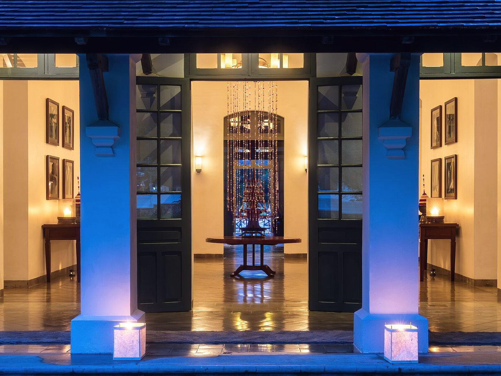
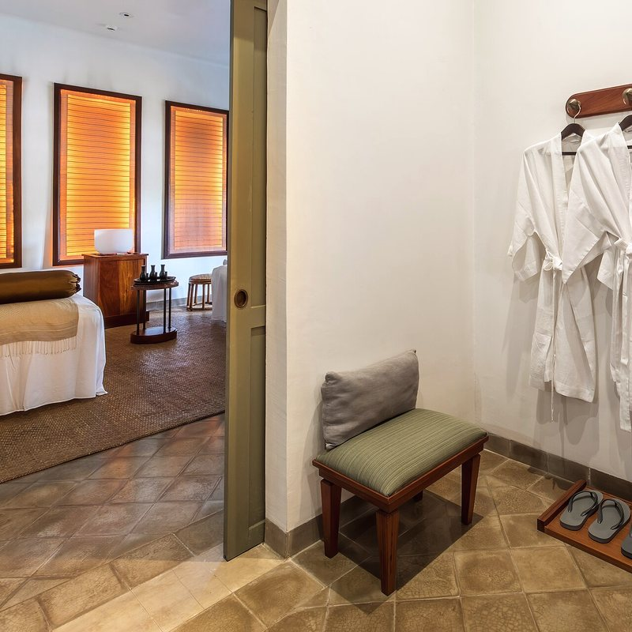

Accueil / Votre séjour
Ce qu'il faut savoir avant de partir
La Guyane, c'est la France — mais sous l'équateur, à 7 000 kilomètres, avec une vaccination obligatoire et une saison des pluies.
01 — Formalités
Vous restez en France
La Guyane est un département français et une région ultrapériphérique de l'Union européenne. Pas de douane, pas de change, pas de roaming.
- Français et ressortissants de l'UE : carte nationale d'identité ou passeport en cours de validité.
- Autres nationalités : la Guyane ne fait pas partie de l'espace Schengen. Un visa spécifique peut être exigé, distinct du visa Schengen — vérifiez auprès du consulat de France.
- Mineurs voyageant seuls ou sans leurs parents : autorisation de sortie du territoire (formulaire Cerfa) et pièce d'identité du responsable légal.
- Carte Vitale et carte européenne d'assurance maladie : valables normalement.
- Permis de conduire français : valable. Nous pouvons réserver votre location de voiture.

02 — Santé
Un vaccin obligatoire,
quelques précautions
Vaccins recommandés
- Diphtérie, tétanos, poliomyélite à jour
- Hépatites A et B
- Typhoïde pour les séjours en forêt
- Rage si séjour prolongé en zone isolée
- Rougeole pour les enfants et jeunes adultes
Moustiques
Dengue, chikungunya et Zika circulent sur le littoral. Il n'existe pas de vaccin : la protection passe uniquement par le répulsif.
- Répulsif à 50 % de DEET ou 20 % d'icaridine
- Application toutes les 4 à 6 heures
- Manches longues et pantalon au crépuscule
- Les femmes enceintes doivent consulter avant de partir (risque Zika)
Paludisme
Le risque est négligeable sur le littoral, où se trouve l'hôtel, et à Cayenne. Il devient réel le long des fleuves Maroni et Oyapock et sur les sites d'orpaillage.
- Traitement préventif à discuter avec votre médecin selon votre itinéraire
- Consultation 4 à 6 semaines avant le départ
- Aucun traitement n'est nécessaire pour un séjour limité à la maison et au littoral
Sur place
- Centre hospitalier de Cayenne à 15 minutes, urgences 24 h/24
- Pharmacie de garde à Rémire-Montjoly, liste à la réception
- Médecin de garde joignable par la conciergerie à toute heure
- SAMU : 15 · Pompiers : 18 · Numéro européen : 112
Petite trousse à emporter
- Antalgique, antidiarrhéique, antihistaminique
- Désinfectant cutané et pansements
- Crème apaisante après piqûres
- Traitement personnel en quantité suffisante, ordonnance à l'appui
- Sels de réhydratation — on transpire beaucoup plus qu'on ne croit
03 — Climat
Chaud, humide, et il pleut
Entre 26 et 32 °C toute l'année, 80 % d'humidité, douze heures de jour et douze heures de nuit — le soleil se couche à 18 h 30, été comme hiver.
04 — La valise
Emportez peu,
mais emportez juste
Il fait chaud en permanence : vous porterez toujours les mêmes trois tenues. Le reste, c'est de l'équipement.
Vêtements
- Coton et lin, couleurs claires — le synthétique est insupportable
- Un pantalon léger et une chemise à manches longues pour le soir (moustiques)
- Maillot de bain, deux si possible : rien ne sèche vraiment
- Une tenue soignée pour le dîner — pas de veste nécessaire
- Un pull fin : la climatisation des avions et des voitures
Chaussures
- Chaussures de marche fermées, déjà faites à vos pieds
- Sandales ou tongs pour la maison et la plage
- Une paire de chaussettes montantes pour la forêt
- Rien de blanc : la terre est rouge et elle ne part pas
Équipement
- Poncho ou coupe-vent léger — le parapluie ne sert à rien en forêt
- Chapeau à bord large, lunettes de soleil
- Crème solaire indice 50, résistante à l'eau
- Répulsif anti-moustiques (DEET 50 % ou icaridine)
- Lampe frontale et piles de rechange
- Sac étanche pour les sorties en pirogue
- Jumelles si vous en avez de bonnes
- Batterie externe : peu de prises en forêt

05 — Ce que la maison fournit
N'achetez pas ça,
on l'a déjà
Nous équipons nos hôtes pour la forêt, gratuitement et pour toute la durée du séjour. Il suffit de demander à la réception la veille au soir.
- Ponchos de pluie
- Bottes en caoutchouc (36 au 47)
- Bâtons de marche
- Jumelles Swarovski 8×42
- Lampes frontales
- Sacs étanches
- Répulsif anti-moustiques
- Crème solaire
- Sacs et serviettes de plage
- Peignoirs et chaussons
- Parapluies
- Glacière et gourdes isothermes
- Adaptateurs universels
- Guides naturalistes et cartes IGN
06 — Informations pratiques
Les détails qui comptent
Monnaie
Euro. Cartes bancaires acceptées partout sur le littoral, distributeurs à Rémire et à Cayenne. Prévoyez du liquide pour les marchés et l'intérieur.
Décalage horaire
UTC−3, sans changement d'heure. Soit 5 heures de moins qu'en France l'été, 4 heures l'hiver.
Électricité
230 V, 50 Hz, prises françaises de type E. Aucun adaptateur nécessaire si vous venez de métropole.
Téléphone & internet
Forfaits métropolitains valables sans surcoût. 4G et 5G sur le littoral, aucun réseau en forêt. Wi-Fi fibre dans toute la maison.
Eau
L'eau du robinet est potable sur le littoral. Nous mettons de l'eau filtrée à disposition, en carafe, gratuitement et sans limite.
Langues
Français partout. Le créole guyanais est largement parlé. À la maison, nous parlons aussi anglais, portugais et espagnol.
Vol
Paris-Orly → Cayenne Félix-Éboué (CAY) en 8 h 45 sans escale. L'aéroport est à 20 minutes de l'hôtel.
Sur place
Voiture indispensable si vous souhaitez être autonome. Nous organisons la location, la livraison à l'hôtel et la restitution à l'aéroport.
07 — Règlement intérieur
Douze règles,
pas une de plus
En un coup d'œil : ce qui est demandé, et pourquoi. Rien d'autre à retenir.
Les horaires
Arrivée & départ
Votre chambre est prête à 15 h. Il faut la libérer avant 12 h.
Besoin de plus de temps ? Le départ tardif jusqu'à 16 h coûte la moitié d'une nuit, selon disponibilité. Dans tous les cas, nous gardons vos bagages et vous laissons une salle pour vous rafraîchir.
Calme de 22 h à 7 h 30
Après 22 h, on baisse le son.
Les cloisons sont anciennes et tout le monde dort fenêtres ouvertes. Le bar, lui, reste ouvert jusqu'à minuit — à l'intérieur.
Bassin & spa
Bassin ouvert 7 h – 20 h. Spa réservé aux plus de 16 ans.
Il n'y a pas de maître-nageur : vous vous baignez sous votre responsabilité. Douche avant d'entrer dans l'eau, et ni verre ni enceinte au bord.
Tenue au dîner
À partir de 19 h : ni maillot, ni torse nu, ni pieds nus.
Une tenue simple et soignée suffit — ni veste ni cravate. Au déjeuner, le paréo est parfaitement admis.
Le confort de chacun
Établissement non-fumeur
On ne fume ni ne vapote à l'intérieur, chambres comprises.
Deux terrasses sont aménagées pour cela, avec cendriers. Une chambre où l'on a fumé est facturée 250 € de remise en état.
Enfants
Bienvenus, sous votre surveillance. Le bassin leur est réservé jusqu'à 18 h.
Après 18 h, le bassin devient un espace calme pour les adultes. Lit bébé, chaise haute et menu enfant sont gratuits.
Animaux
Chiens de moins de 8 kg acceptés sur demande, 45 € la nuit.
Pas d'accès au restaurant, au spa ni au bassin, et jamais seuls en chambre. Les chiens guides et d'assistance sont admis partout, sans supplément.
Vos invités
Bienvenus au restaurant et au bar, jusqu'à 22 h. Prévenez la réception.
Les chambres, le bassin et le spa restent réservés aux résidents. Une fête privée demande notre accord écrit.
Caution
Empreinte de carte à l'arrivée, sans aucun débit.
Elle ne sert qu'en cas de casse ou d'objet manquant, facturés au prix de remplacement. Mettez vos objets de valeur dans le coffre de la chambre.
La nature autour
Tortues marines
D'avril à septembre, la nuit sur la plage : aucune lumière, aucun flash.
La plage de Montjoly est un site de ponte protégé. Restez à 10 mètres au moins, ne coupez jamais la route d'une tortue vers la mer, pas de feu ni de circulation sur le haut de plage. Les infractions sont passibles d'amende.
Ne rien prélever
Plantes, fleurs, bois, coquillages, insectes : on regarde, on ne ramasse pas.
Et on ne nourrit aucun animal, singes et oiseaux du jardin compris : cela les rend agressifs et malades. Vos déchets d'excursion reviennent avec vous.
Drones interdits
Aucun drone sur la propriété, sans exception.
Le survol du littoral guyanais est très encadré, et interdit près du Centre Spatial. Nous ne pouvons accorder aucune dérogation.
08 — Conditions
Réservation et annulation
| Tarif | À la réservation | Annulation sans frais | Au-delà |
|---|---|---|---|
| Flexible | Empreinte de carte, aucun débit | Jusqu'à 7 jours avant l'arrivée 14 jours en haute saison |
1 nuit facturée |
| Non remboursable (−15 %) | Paiement intégral | Aucune | Aucun remboursement |
| Suite Canopée & Villa Maripa | Acompte de 30 % | Jusqu'à 30 jours avant l'arrivée | Acompte conservé |
| Groupes & privatisation | Acompte de 40 % | Jusqu'à 60 jours avant l'arrivée | Selon contrat |
Bon à savoir
- Non-présentation : la première nuit est facturée et le reste du séjour libéré
- Départ anticipé : les nuits réservées restent dues
- Les excursions s'annulent sans frais jusqu'à 48 h avant le départ
- Une excursion annulée par le guide pour raison météo est remboursée intégralement
- Nous vous recommandons une assurance annulation ; nous n'en vendons pas
Paiement
- Cartes Visa, Mastercard et American Express
- Virement bancaire pour les séjours de plus de 7 nuits
- Espèces acceptées jusqu'à 1 000 € par séjour
- Taxe de séjour de 3,30 € par adulte et par nuit, réglée sur place
- Facture détaillée envoyée par courriel au départ
09 — Questions fréquentes
Ce qu'on nous demande
Oui, sans exception au-delà de 12 mois. C'est une obligation réglementaire pour entrer en Guyane, et elle est contrôlée. Prévoyez l'injection au moins dix jours avant le vol, dans un centre de vaccination internationale. Une dose unique protège désormais à vie.
Rémire-Montjoly et le littoral se vivent comme n'importe quelle ville française : prudence ordinaire, pas d'objets de valeur en évidence, voiture fermée. Les difficultés dont on parle concernent surtout l'ouest du département et les sites d'orpaillage illégal de l'intérieur, où vous n'irez pas. Nos guides connaissent les zones à éviter.
Oui, mais sans illusion : l'eau est chaude, trouble et couleur café, chargée des limons de l'Amazone. Il n'y a ni récif ni eau turquoise. La baignade n'est pas surveillée et les courants peuvent être forts à marée descendante. Pour nager vraiment, il y a le bassin de l'hôtel.
Sept nuits est un bon format : deux jours pour le littoral et Cayenne, deux pour les Îles du Salut et Kourou, deux pour Kaw ou une remontée de crique, et une journée sans rien faire. En dessous de cinq nuits, il faut choisir entre la mer et la forêt.
Moins qu'on ne le craint sur le littoral venté, davantage au crépuscule et en forêt. Le jardin est traité biologiquement, les chambres sont équipées de moustiquaires et de ventilateurs, et nous mettons du répulsif à disposition. Un pantalon léger le soir règle l'essentiel.
Oui, midi et soir, sur réservation. Trente-cinq couverts seulement : mieux vaut appeler la veille, surtout le week-end. Vos invités sont les bienvenus, il suffit de nous prévenir.
Quatre chambres Deluxe Wapa sont de plain-pied, avec porte élargie, douche à l'italienne sans ressaut et barres d'appui. Le restaurant, le bar, le bassin et la réception sont accessibles. Le spa et l'étage ne le sont pas, la maison étant classée. Dites-le-nous à la réservation : nous préparons la chambre en conséquence.
Cela arrive, surtout entre avril et juin. La bibliothèque, le spa et le bar sont faits pour ça. Les guides adaptent les sorties — la forêt sous la pluie a d'ailleurs quelque chose que la forêt sèche n'a pas. Aucune excursion annulée pour météo n'est facturée.
La maison se privatise entièrement à partir de 18 chambres, avec un minimum de trois nuits. Nous accueillons des séminaires jusqu'à 40 personnes et des mariages jusqu'à 90 convives dans le jardin. Écrivez-nous, nous établirons une proposition sur mesure.

Une question restée sans réponse ?
Écrivez-nous,
on répond vraiment
Sous 24 heures, par une personne qui travaille dans la maison — pas par un centre d'appel.